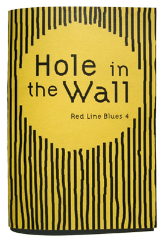

Available now in the online store.
Red Line Blues 4: Hole In the Wall
Summer 2007
72 pages
5" x 7"
Edition of 400
Click on Mimi’s and Matthew’s titles below to hear them perform their songs!
Matthew Wells — The Naughty Pine: A Brief History
Anna Dunn — The Drowning Rage Joint
Sam Yanes — Fire in the Hole
Matthew Brookshire — Any Hole in the Wall
Albert Podell — Yeah, But It’s Me
Jessie Eller-Isaacs — Sinking
Sebastian Matthews — Hole in the Wall
Steven Norris — The Diners of Buncombe County
Ken Becker — Amos
Mimi LaValley — The Politics of Pine
Aaron Cometbus — Sluggo
Richard Hansgen — Nine on a Ten Scale
Moriah Norris-Hale — The Half-Life of Craters
Simon Kress — The Works of Calliope Fitts
Chall Gray — A Defense of Memory Loss
Irene Wanberg — To Frame a Hole
Will Newman — The Last Noodles